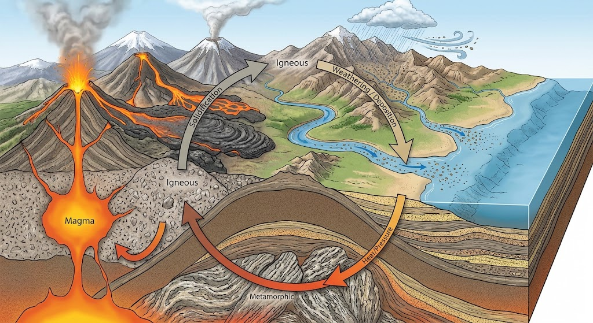

หินและวัฏจักรของหิน
หินเป็นวัสดุธรรมชาติที่เกิดจากการรวมตัวของแร่หรือสารประกอบต่าง ๆ โดยหินแต่ละชนิดมีองค์ประกอบ ลักษณะ และกระบวนการเกิดที่แตกต่างกัน หินมีความสำคัญต่อการศึกษาประวัติและการเปลี่ยนแปลงของโลก เนื่องจากหินสามารถบันทึกข้อมูลเกี่ยวกับสภาพแวดล้อมและเหตุการณ์ทางธรณีวิทยาในอดีตได้ นักธรณีวิทยาจึงจำแนกหินออกเป็น 3 ประเภทหลัก ได้แก่ หินอัคนี หินตะกอน และหินแปร
หินอัคนีเกิดจากการเย็นตัวและแข็งตัวของหินหนืดหรือแมกมา หากเกิดการเย็นตัวใต้พื้นผิวโลกจะได้หินอัคนีแทรกซอน เช่น หินแกรนิต แต่หากแมกมาหรือลาวาเย็นตัวบนพื้นผิวโลกจะเกิดเป็นหินอัคนีพุ เช่น หินบะซอลต์ หินตะกอนเกิดจากการสะสมตัวของตะกอนที่ผ่านกระบวนการผุพัง การกร่อน การพัดพา และการทับถม ตัวอย่างเช่น หินทรายและหินปูน ส่วนหินแปรเกิดจากหินเดิมที่ได้รับความร้อน ความดัน หรือสารละลายที่มีปฏิกิริยาเคมี ทำให้โครงสร้างและแร่ประกอบเปลี่ยนแปลงไป เช่น หินอ่อนและหินชนวน
วัฏจักรของหินเป็นกระบวนการเปลี่ยนแปลงของหินจากประเภทหนึ่งไปเป็นอีกประเภทหนึ่ง โดยอาศัยกระบวนการทางธรณีวิทยาต่าง ๆ เช่น การหลอมละลาย การเย็นตัว การผุพัง การทับถม และการแปรสภาพ กระบวนการเหล่านี้เกิดขึ้นอย่างต่อเนื่องและใช้เวลานาน การศึกษาวัฏจักรของหินจึงช่วยให้เข้าใจการเปลี่ยนแปลงของเปลือกโลกและการเกิดทรัพยากรธรณีในธรรมชาติ